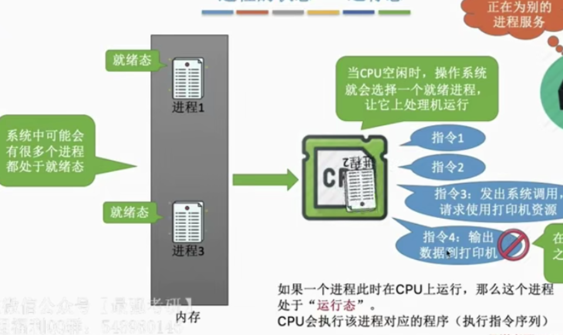
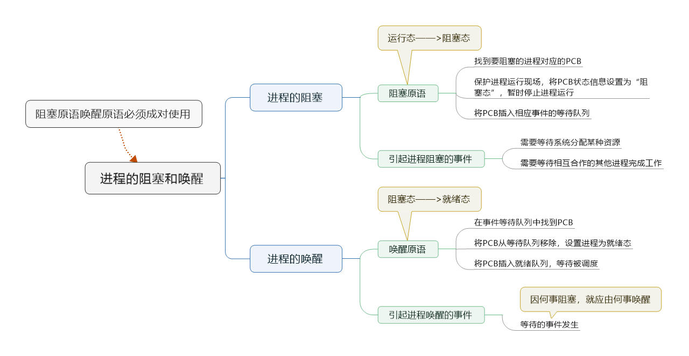
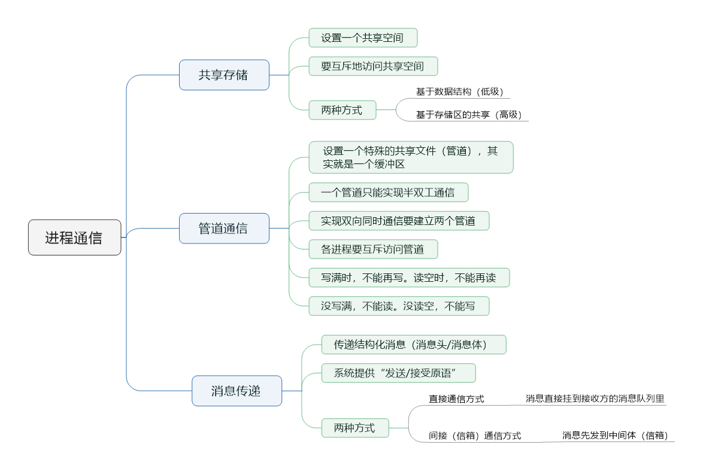
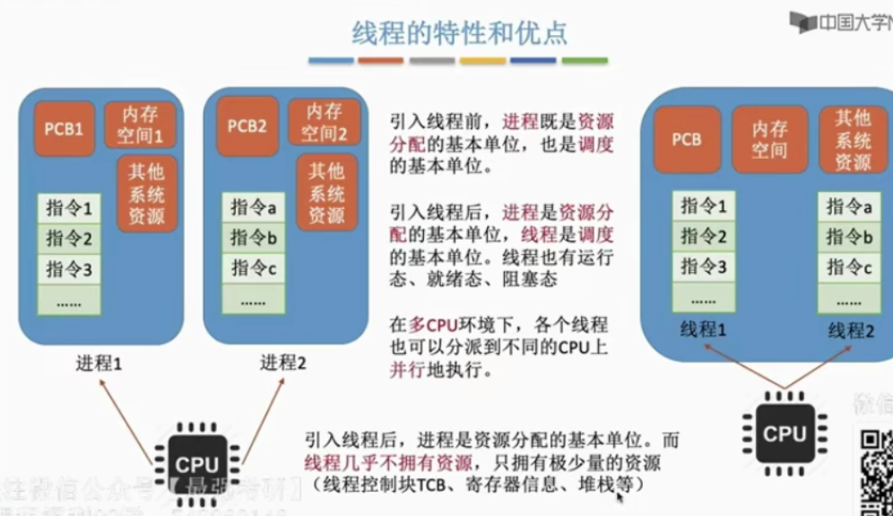
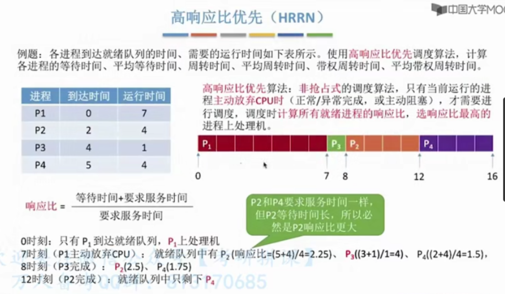
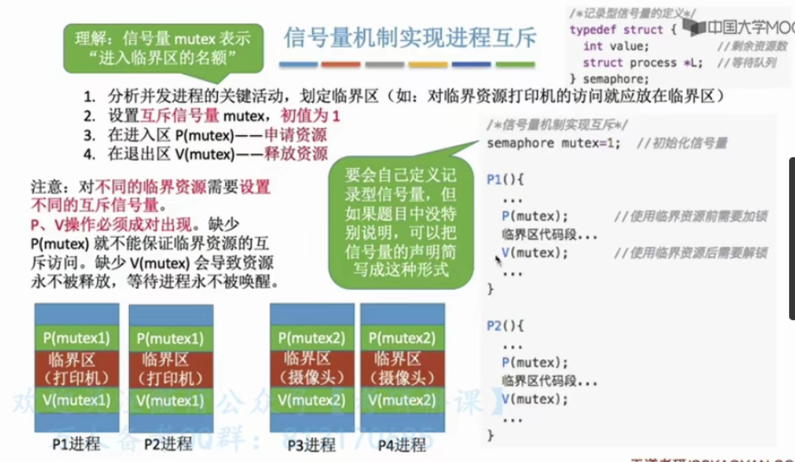

进程的概念
程序：是静态的，是存放在磁盘里的可执行文件，是一系列指令集合
进程(Process)：是动态的，是程序一次执行过程。
同一个程序的多次执行会对应多个进程。
问题：操作系统是这些进程的管理者，它如何区分各个进程？
当进程被创建时，操作系统会为该进程分配一个唯一的、不重复的的“身份证号”——PID（Process ID，进程ID）
进程的组成——PCB
操作系统要：
- 记录PID，进程所属用户ID（UID）-基本的进程描述信息，可以让操作系统区分各个今晨
- 还要记录给进程分配了哪些资源（如：分配了多少内存、正在使用哪些I/O设备、正在使用哪些文件）-可用于实现操作系统对资源的管理
- 还要记录进程的运行情况（如：CPU使用时间、磁盘使用情况等）-可用于实现操作系统对进程的控制
这些信息都被保存在一个数据结构PCB（Process Control Block）中，即进程控制块。
PCB是给操作系统用的。
程序段、数据段是给进程自己用的。
一个进程实体（进程映像）由PCB、程序段、数据段组成。
进程是动态的，进程实体（进程映像）是静态的。
进程是进程实体的运行过程，是系统进行资源分配和调度的一个独立单位。
进程的特征

进程的状态与装换
创建态、就绪态、运行态和终止态

在进程运行的过程中，可能会请求等待某个事件的发生。
在这个事件发生之前，进程无法继续往下执行，此时操作系统让这个进程下CPU，并让它进入“阻塞态”。
一个进程可以执行exit系统调用，请求操作系统终止该进程。
此时该进程会进入“终止态”，操作系统会让该进程下CPU，并回收内存空间等资源，最后还要回收还进程的PCB。
当终止进程的工作完成后，这个进程就彻底消失了。
注意：不能由阻塞态直接转换为运行态，也不能就绪态直接转换为阻塞态。
进程的整个生命周期中，大部分时间都处于三种基本状态中
| 三种基本状态 | 解释 | 补充 |
|---|---|---|
| 运行态(Running) | 占有CPU，并在CPU上运行 | 单CPU情况下，同一时刻只有一个进程处于运行态，多核CPU情况下，可能有多个进程处于运行态 |
| 就绪态(Ready) | 已经具备运行条件，但是由于没有空闲CPU，而暂时不能运行 | |
| 阻塞态(Waiting/Blocked)，又称：等待态 | 因等待某一事件而暂时不能运行 |
| 另外两种状态 | 解释 |
|---|---|
| 创建态(New，又称：新建态) | 进程正在被创建，操作系统为进程分配资源，初始化PCB |
| 终止态(Terminated，又称：结束态) | 进程正在从系统中撤销，操作系统会回收进程拥有的资源，撤销PCB |
进程PCB中，会有一个变量state来表示进程的当前状态。
进程的组织方式
链接方式
很多操作系统还会根据阻塞原因不同，再分为多个阻塞队列。
索引方式
进程控制
进程控制的主要功能是对系统中的所有进程实施有效的管理，它具有创建新进程、撤销已有进程、实现进程状态装换等功能。
简化理解：进程控制就是要实现进程状态转换。
原语是一种特殊的程序，它的执行具有原子性。也就是说，这段程序的运行必须一气呵成，不可中断。
原语的执行具有原子性，即执行过程只能一气呵成，期间不允许被中断。可以
用“关中断指令”和“开中断指令”这两个特权指令实现原子性。
CPU执行了关中断指令之后，就不在执行检查中断信号，直到执行开中断指令之后才会恢复检查。

无论哪个进程控制原语，要做的无非三类事情：
- 更新PCB中的信息
修改进程状态（state) 保存/恢复运行状态 - 将PCB插入合适的队列
- 分配/回收资源
进程通信
进程通信就是指进程之间的信息交换。
进程是分配系统资源的单位（包括内存地址空间），因此各进程拥有内存地址空间相互独立。
为了保证安全，一个进程不能直接访问另一个进程的地址空间。
但是进程之间的信息交换又是必须实现的，为了保证进程间的安全通信，操作系统提供了：共享存储、消息传递、管道通信。
共享存储
两个进程对共享空间的访问必须是互斥的。
基于数据结构的共享：比如共享空间只能放长度为10的数组。这种共享方式速度慢、限制多，是一种低级通信方式。
基于存储区的共享：在内存中画一块共享存储区。高级通信方式。
管道通信
- 管道只能采用半双工通信，某一时间段内只能实现单向的传输。如果要实现双向同时通信，则需要设置两个管道。
- 各进程要互斥地访问管道。
- 数据以字符流的形式写入管道，当管道写满时，写程序的write()系统调用将被阻塞，等待读进程将数据取走。当读进程将数据全部取走时，管道变空，此时读进程的read()系统将被阻塞。
- 如果没写满，就不允许读。如果没读完，就不允许写。
- 数据一旦被读出，就从管道中被抛弃，这就意味着读进程最多只能有一个，否则可能会有读错数据的情况。

线程的概念和特点
进程间并发，开销很大
线程间并发，开销很小
引入线程机制后，并发带来的系统开销降低，系统并发性提升。
注意：从属于不同进程的线程间切换，也会导致进程的切花，开销也大。

线程的实现方式（多线程模型）
用户级线程（User-level Thread,ULT）
历史背景：早期的操作系统只支持进程不支持线程。当时的“线程”是由线程库完成的。
- 用户级线程由应用程序通过线程库实现，所有的线程管理工作都由应用程序负责（包括线程切换）
- 用户级线程中，线程切换可以在用户态下完成，无需操作系统干预。
- 在用户看来，是有多个线程。但是在操作系统内核看来，并不能意识到线程的存在。“用户级线程”就是“从用户视角看能看到的线程”。
- 优缺点：
优点：用户级线程的切换在用户空间即可完成，不需要切换到和心态，线程管理系统开销小，效率高。
缺点：当一个用户级线程被阻塞后，整个线程都会被堵塞，并发度不高。多个线程无法在多核处理机上并行运行。
内核级线程（Kernel-Level Thread, KLT, 又称“内核支持的线程”）

（一对一模型）
- 内核级线程的管理工作由操作系统完成。
- 线程调度、切换等工作都由内核负责，因此内核级线程的切换必然需要在核心态下才能完成。
- 操作系统会为每个内核级新城建立相应的TCB（Thread Control Block，线程控制模块）通过TCB对线程进行管理。“内核级线程”就是“从操作系统内核视角看能看到的线程”。
- 优缺点：
优点：当一个线程被阻塞后，别的线程还可以继续执行，并发性强。多线程可在多核处理机上并行执行。
缺点：一个用户进程会占用多个内核级线程，线程切换由操作系统内核完成，需要从用户态变为和心态，因此线程管理成本高，开销大。
多线程模型
一对一模型
多对一模型：多个用户级线程映射到一个内核级线程。且一个进程只被分配一个内核级线程。
优点：用户级线程切换在用户空间即可完成，不需要切换到核心态，线程管理的西永开销小，效率高。
缺点：当一个用户级线程被阻塞后，震哥哥进程都会被阻塞，并发度不高。多个线程不可再多核处理及上并行运行。
重重重点：
操作系统只“看得见”内核级线程，因为只有内核级线程才是处理机分配的单位。
多对多模型：
n用户及线程映射到m个内核级线程（n>m）。每个用户进程对应m个内核级线程。
克服了多对一模型并发度不高的缺点（一个阻塞全体阻塞），哟克服了一对一模型中一个用户进程占用太多内核级线程，开销太大的缺点。
可以这样理解：
用户级线程是“代码逻辑”的载体
内核级线程是“运行机会”的载体
内核级线程才是处理及分配的单位。
一段“代码逻辑”只有获得了“运行机会”才能被CPU执行。
处理机调度概念、层次
调度的基本概念
当有一堆任务要处理，但由于资源有限，这些事情没法同时处理。这就需要确定某种规则来决定处理这些任务的顺序，这就是“调度”研究的问题。
在多道程序中，进程的数量往往是多于处理机的个数的，这样就不可能并行地处理各个进程。
处理机调度，就是从就绪队列中按照一定算法选择一个进程并将处理机分配给它运行，已实现进程的并发执行。
调度的三个层次
高级调度
由于内存空间有限，有时无法将用户提交的作业全部放入内存，因此就需要确定某种规则来决定将作业调入内存的顺序。
高级调度(作业调度)。按一定的原则从外存上处于后备队列的作业中挑选一个（或多个）作业，给他们分配内存等必要资源，并建立相应的进程（建立PCB），以使它（们）获得竞争处理机的权利。
高级调度是辅存（外存）与内存之间的调度。每个作业只调入一次，调出一次。作业调入时会建立相应的PCB，作业调出时才撤销PCB。高级调度主要是指调入的问题，因为只有调入的实际需要操作系统来确定，但调出的时机必然是作业运行结束才调出。
中级调度
引入了虚拟存储技术之后，可将暂时不能运行的进程调至外存等待。等它重新具备了运行条件且内存稍有空闲时，重新调入内存。
这么做的目的是为了提高内存利用率和系统吞吐量。
暂时调到外存等待的进程状态为挂起状态。值得注意的是，PCB并不会一起调到外存，而是会常驻内存。PCB中会记录进程数据在外存中的存放位置，进程状态等信息，操作系统通过内存中的PCB来保持对各个进程的监控、管理。被挂起的进程PCB会被放在挂起队列中。
中级调度（内存调度），就是要决定哪个处于挂起状态的进程重新调入内存。
一个进程可能会被多次调出、调入内存，因此中级调度发生的频率要比高级调度更高。
补充知识：进程的挂起态与七状态模型
暂时调到外存等待的进程状态为挂起状态（挂起态suspend）
挂起态又可以进一步细分为就绪挂起、阻塞挂起两种状态。
五状态模型——>七状态模型
注意：“挂起”和“阻塞”的区别，两种状态都是暂时不能获得CPU的服务，但是挂起态是将进程映像调到外存中，而阻塞态下进程映像还在内存中。
有的操作系统会把就绪挂起、阻塞挂起分为两个挂起队列，甚至会根据阻塞原因不同再把阻塞挂起进程进一步分为多个队列。
低级调度
低级调度(进程调度)，其主要任务是按照某种方法和策略从就绪队列中选取一个进程，将处理机分配给它。
进程调度室操作系统中最基本的一种调度，在一般的操作系统中都必须配置进程调度。
进程调度的频率很高，一般几十毫秒一次。
| 要做什么 | 调度发生在 | 发生频率 | 对进程状态的影响 | |
|---|---|---|---|---|
| 高级调度（作业调度） | 按照某种规则，从后备队列中选择合适的作业将其调入内存，并为其创建进程 | 外存——>内存（面向作业） | 最低 | 无——>创建态——>就绪态 |
| 中级调度（内存调度） | 按照某种规则，从挂起队列中选择合适的进程将其数据调回内存 | 外存——>内存（面向过程） | 中等 | 挂起态——>就绪态（阻塞挂起——>阻塞态） |
| 低级调度（进程调度） | 按照某种规则，从就绪队列中选择一个进程为其分配处理机 | 内存——>CPU | 最高 | 就绪态——>运行态 |
进程调度
进程调度的时机
不能进行进程调度与切换的情况：
- 在处理中断过程中。中断处理过程复杂，与硬件密切相关，很难做到在中断处理过程中进行进程切换。
- 进程在操作系统内核程序临界区中。
- 在原子操作过程中（原语）。原子操作不可中断。
进程在操作系统内核程序临界区中不能进行调度与切换。
内核程序临界区一般是用来访问某种内核数据结构的，比如进程的就绪队列。
进程调度的方式
非剥夺调度方式，又称非抢占方式。即，只允许进程主动放弃处理机。在运行过程中即使有更紧迫的人物到达，当前进程仍然会继续使用处理机，知道该进程终止或主动要求进入阻塞态。
实现简单，任务开销小但是无法及时处理紧急任务，适合于早期的批处理系统。
剥夺调度方式，又称抢占方式，当一个进程正在处理机上执行时，如果有一个更重要或更紧迫的基础讷航需要使用处理机，则立即暂停正在执行的进程，将处理机分配给更重要紧迫的那个进程。
可以优先处理更紧急的进程，也实现让各及昵称按时间片轮流执行的功能（通过时钟中断），适合于分时操作系统，实时操作系统。
进程的切换与过程
调度算法的评价指标
CPU利用率
由于早期CPU造价极其昂贵，因此人们会希望让CPU尽可能多地工作
CPU利用率：CPU“忙碌”的事件占总时间的比例。
利用率=忙碌的事件/总时间
系统吞吐量
对计算机来说，希望能用尽可能少的时间处理尽可能多的作业
系统吞吐量：单位时间内完成作业的数量
系统吞吐量=总共完成了多少道作业/总共花了多少时间
周转时间
周转时间，是指作业被提交给系统开始，到作业完成为止的这段时间间隔。
（作业）周转时间=作业完成时间-作业提交时间
平均周转时间=各作业周转时间之和/作业数
带权周转时间 = 作业周转时间/作业时机运行的时间 = （作业完成时间-作业提交时间）/作业实际运行的时间
带权周转时间与周转时间都是越小越好
平均带权周转时间=各作业的带权周转时间之和/作业数
等待时间
等待时间，指进程/作业处于等待处理机状态时间之和，等待时间越长，用户满意度越低。
对于进程来说，等待时间就是指进程建立后等待被服务的事件之和，在等待I/O完成的期间其实进程也是在被服务，所以不计入等待时间。
对于作业来说，不仅要考虑建立进程后的等待时间，还要加上作业在外存后备队列中等待的时间。
调度算法
Tips:各种调度算法的学习思路
- 算法思想
- 算法规则
- 这种调度算法是用于 作业调度 还是 进程调度？
- 抢占式？ 非抢占式？
- 优点和缺点
- 是否会导致饥饿（某进程/作业长期得不到服务）
先来先服务（FCFS，First Come First Serve）
短作业优先（SJF，Shortest Job First）
非抢占式的短作业优先调度算法
应该称为短进程优先调度算法（SPF）
短作业/进程优先调度算法：每次调度时选择当前已到达且运行时间最短的作业/进程。
抢占式的短作业优先调度算法
称为最短剩余时间优先算法（SRTN）
最短剩余时间优先算法：每当有进程加入就绪队列改变时就需要及导读，如果新到达的进程剩余时间比当前运行的进程剩余时间更短，则由新进程抢占处理机，当前运行进程重新回到就绪队列。另外，当一个进程完成时也需要调度。
注意：
- 如果题目中未特殊说明，所提到的“短作业/进程优先算法”默认是非抢占式的。
高响应比优先（HRRN Highest Response Ratio Next）

这几种算法主要关心对用户的公平性、平均周转时间、平均等待时间等评价系统整体性能的指标，但是不关心“响应时间”，也不区分任务的紧急程度，因此对于用户来说，交互性和糟糕。因此这三种算法一般适合用于早期的批处理系统。当然FCFS算法也常结合其他的算法使用，在现在也扮演着很重要的角色。
注意做题，常出现在小题计算中
时间片轮转（RR，Round-Robin）
如果时间片太大，使得每个进程都可以在一个时间片内就完成，则时间片轮转调度算法退化为先来先服务调度算法，并且会增大进程响应时间，因此时间片不能太大。
另一方面，进程调度、切换是有时间代价的（保存、恢复运行环境），因此如果事件片太小，会导致进程切换过于频繁，系统会花大量的时间来处理进程切换。从而导致实际用于进程执行的事件比例减少，可见时间片也不能太小。
一般来说，设计时间片时要让切换进程的开销占比不超过1%。
优先级调度算法
多级反馈队列调度算法
FCFS算法的优点是公平
SJF算法的优点是能尽快处理短作业，平均等待/周转时间等参数很优秀
时间片轮转算法可以让各个进程得到及时响应
优先级调度算法可以灵活地调整各种进程被服务的机会
比起早期的批处理系统来说，由于计算机造价大幅降级，因此之后出现的交互式操作系统（包括分时操作系统、实时操作系统等）更注重系统的响应时间、公平性、平衡性等指标。而这几种算法恰好也能较好地满足交互式系统的需求。因此这三种算法适合用于交互式系统（比如UNIX使用的就是多级反馈队列调度算法）
一定要动手做课后习题
进程同步和互斥
进程同步
进程具有异步性的特征。异步性是指，个并发执行的进程以各自独立、不可预知的速度向前推进。
同步亦称直接制约关系，它是指为完成某种任务而建立的两个或多个进程，这些进城因为需要在某些位置上协调它们的工作次序而产生的制约关系。进程间的直接制约关系就是源于它们之间的相互合作。
进程互斥
我们把一段时间内只允许一个进程使用的资源称为临界资源。许多物理设备（比如摄像头、打印机）都属于临界资源。此外还有很多变量、数据、内存缓冲区都属于临界资源。
对临界资源的访问，必须互斥地进程。互斥，亦称间接制约关系。**进程互斥指当一个进程访问某临界资源时，另一个想要访问该临界资源的进程必须等待。当前访问临界资源的进程访问结束，释放该临界资源后，另一个进程才会去访问临界资源。
对临界资源的互斥访问，可以在逻辑上分为以下四个部分：
注意：
临界区是进程中访问临界资源的代码段。
进入区和退出区是负责实现互斥的代码段。
临界区也可称为“临界段”。
进程互斥的软件实现方法
学习提示：
- 理解各个算法的思想、原理
- 结合上小节学习的“实现互斥的四种逻辑部分”，重点理解个算法在进入区、退出区都做了什么
- 分析个算法存在的缺陷（结合“实现互斥要遵循的四种原则”进行分析）
单标志法
算法思想：两个进程在访问完临界区后会把使用临界区的权限转交给另一个进程。也就是说每个进程进入临界区的权限只能被另一个进程赋予
该算法可以实现“同一时刻最多只允许一个进程访问临界区”
单标志法存在的主要问题是：违背“空闲让进”原则。
双标志先检查法
算法思想：设置一个布尔型数组flag[]，数组中各个元素用来标志各个进程想进入临界区的意愿。
双标志先检查法的主要问题是：违反“忙则等待”原则。
原因在于，进入区的“检查”和“上锁”两个处理不是一气呵成的。“检查”后，“上锁”前可能发生切换。
双标志后检查法
Peterson 算法
算法思想：结合双标志法、单标志法的思想。如果双方都争着想进入临界区，呢可以让进程尝试“孔融让梨”（谦让）。做一个有礼貌的进程。
Peterson算法用软件方法解决了进程互斥问题，遵循了空闲让进、忙则等待、有限等待三个原则，但是仍然未遵循让权等待的原则。
进程互斥的硬件实现方法
学习提示：
优点：简单高效
缺点：不适用于多处理机：只适用于操作系统内核进程，不适用于用户进程（因为开/关中断指令只能运行在内核态，这组指令如果能让用户随意使用会很危险）
TestAndSet(TS指令/TSL指令)
优点：实现简单，无需像软件实现方法那样严格检查是否会有逻辑漏洞；适用于多处理机环境
缺点：不满足“让权等待”原则，暂时无法进入临界区的进程会占用CPU并循环执行TSL指令，从而导致“忙等”。
Swap指令(XCHG指令)
有的地方也叫做Exchange指令，或简称XCHG指令。
Swap指令是用硬件实现的，执行的过程不允许被中断，只能一气呵成。以下是用C语言描述的逻辑
信号量机制
进程互斥的四种软件实现方式（单标执法、双标志先检查法、双标志后检查、Peterson算法）
进程互斥的三种软件实现方式（中断屏蔽方法、TS/TSL指令、Swap/XCHG指令）
- 在双标志先检查法中，进入区的“检查”、“上锁”操作无法一气呵成，从而导致整个进程有可能同时进入临界区的问题
- 所有的解决方案都无法实现“让权等待”。
1965年，荷兰学者Dijkstra提出了一种实现进程互斥、同步的方法——信号量机制。
用户进程可以通过使用操作系统提供的一对原语来对信号量进行操作，从而很方便的实现了进程互斥、进程同步。
信号量其实就是一个变量（可以是一个整数，也可以是更复杂的记录性变量），可以用一个信号量来表示系统中某种资源的数量**，比如：系统中只有一台打印机，就可以设置一个初值为1的信号量。
一对原语：wait(S)原语和signal(S)原语，可以把原语理解为我们自己写的函数，函数名分别为wait和signal，括号里的信号量S其实就是函数调用时传入的一个参数。
wait、signal原语常简称为P、V操作。因此，做题的时候常把wait(S)、siganl(S)两个操作分别写为P(S)、V(S)。
整型信号量
记录型信号量
注：若考试中出现P(S)、V(S)的操作，除非特别说明，否则默认S为记录型信号量。
用信号量机制实现进程互斥、同步、前驱关系
Tips:不要一头扎进代码里，要注意理解信号量背后的含义，一个信号量对应一种资源。
信号量的值=这种资源的剩余数量（信号量的值如果小于0，说明此时有进程在等待这种资源）
P(S)——申请一个资源S，如果资源不够就阻塞等待
V(S)——释放一个资源S，如果有进程在等待该资源，则唤醒一个进程

生产者消费者问题
多生产者多消费者问题
总结：在生产者-消费者问题中，如果缓冲区的大小为1，那么有可能不需要设置互斥信号量就可以实现互斥访问缓冲区的功能。当然这不是绝对的，要具体问题具体分析。
建议：在考试中如果来不及仔细分析，可以加上互斥信号量，保证各进程一定会互斥地访问缓冲区。但需要注意的是，实现互斥的P操作一定要在实现同步的P操作之后，否则可能引起“死锁”。
PV操作题目的解题思路：
- 关系分析。找出题目中描述的各个进程，分析它们之间的同步、互斥关系。
- 整理思路。根据各进程的操作流程确定P、V操作的大致顺序。
- 设置信号量。设置需要的信息量，并根据题目条件确定信号量初值。（互斥信号量初值一般为1，同步信号量的初始值要看对应资源的初始值是多少）
解决“多生产者-多消费者问题”的关键在于理清复杂的同步关系。
吸烟者问题
吸烟者问题可以为我们解决“可以生产多个产品的单生产者”问题提供一个思路。
若一个生产者要生产多种产品（或者说会引发多种前驱事件），那么各个V操作应该放在各自对应“事件”发生之后的位置。